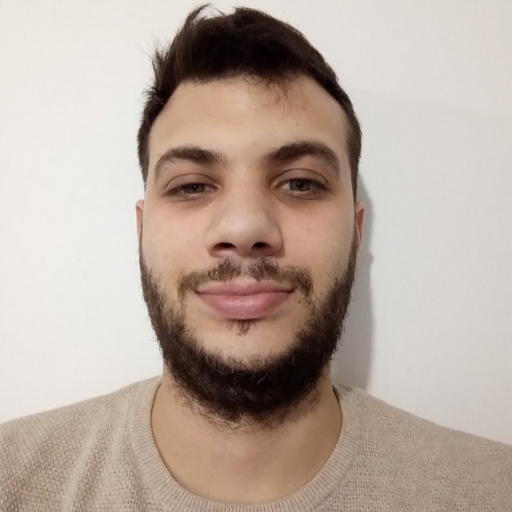

Lucas Ezequiel Penel
Sobre Mi
Profesional responsable en busca de un puesto como Frontend. Mi objetivo es obtener experiencia en el área del Desarrollo web.
Contacto
 1133721271
1133721271-
 El Palomar - Bs As
El Palomar - Bs As  GitHub
GitHub Linkedin
Linkedin-
 lucasezequielpenel@gmail.com
lucasezequielpenel@gmail.com
FORMACIÓN ACADÉMICA
- Tecnicatura Universitario en Redes Informáticas. Universidad Nacional De San Martín. 2010-diciembre 2013.
FORMACIÓN COMPLEMENTARIA
- Curso “Reparador De P.C.”. Centro De Formación Profesional 403 – El Palomar – Tres De Febrero. Julio de 2005. Reparacion de PC / Notebooks / Netbooks,Formateo de PC + Backup, Armado y reparacion de PCs, Formateo de equipos y Recuperación de datos.
- Curso Redes Cisco CCNA - Universidad Tecnologica Nacional sede Centro- Agosto 2010 - Agosto 2012. sin completar la cuarta curricula. Estudio del Modelo OSI capa por capa. Cableado estructurado, conectorización y verificación. Hubs, Switches, Switches administrables y VLAN's. NIC's (placas de red), instalación, drivers, configuración y resolución de problemas. Configuración física. Ruteo, Mediante routers (appliances) o mediante equipos, concepto, configuración, tablas de ruteo. Gateways, Puertas de enlaces residenciales y Proxys. DNS dinámicos.
- “Consultor Junior en Seguridad Informática”. Fundación Telefónica. Marzo 2021 – Mayo 2021. Redes y aplicaciones informáticas. Hacking con Python. Criptografía y Esteganografía. Hacking ético. Metasploit. Análisis de sistemas informáticos. Vulneración de mecanismos de identificación y autenticación.
- "Desarrollo Frontend". Fundación Telefónica. Octubre 2021-Actualidad. HTML5 CSS3 JAVASCRIPT BOOSTRAP
EXPERIENCIA LABORAL
- Fuerza Aérea Argentina. Edificio Cóndor - Dirección General de Salud. Departamento Informática. Responsable Informático. (Mayo 2009 - Actualidad). Tareas Realizadas: Administrar los sistemas de seguridad del Organismo (v.g.: firewall de borde, IPS y/o IDS, etc), incluyendo el análisis de sus registros de eventos (logs). Asistir en la resolución de los incidentes informáticos, amenazas y vulnerabilidades Desarrollar toda otra función que surja. Determinar las medidas de protección antimalware a implementar en los activos informáticos. Asistir en la resolución de los incidentes informáticos, amenazas y vulnerabilidades ocurridos.